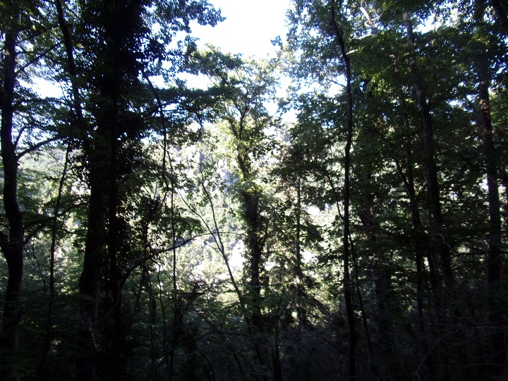
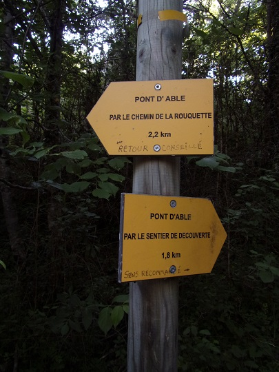

En bordure du Rébenty, rive droite, juste après le pont permettant l'accès au coeur du village commence ce sentier de découverte.


Panneau décrivant la randonnée
Le pont d'accès au village sur le Rébenty
Quelques décorations le long du Rébenty

Voici un provisoire qui dure, déjà 13 ans que le pont romain est partiellement éboulé... Attend-on qu'il soit écroulé pour le réparer ?


Vue vers les gorges et le chateau d'Able qu'on peut déjà apercevoir dès le début du chemin (ce château sera le fil rouge tout le long de notre randonnée)

la trouée du chemin de découverte


Château d'Able sur le chemin de découverte

Une cascade sur un ruisseau transverse

Croisement des 2 chemins de randonnées vers la fin du chemin de découverte

Fin du chemin de découverte
Château d'Able sur la fin du chemin de découverte


Vue du défilé de Joucou depuis la fin du chemin de découverte

Château d'Able aux gorges de Joucou

Entrée des gorges du Rébenty (côté Belfort)
Pan de pierre à l'entrée des gorges du Rébenty (côté Belfort) - ce n'est pas un menhir...
Ce chemin est pour les courageux avec des pentes jusqu'à plus de 40 % aussi bien dans la montée (qui n'en fini pas) puis dans la descente, la majeure partie du trajet se passe en forêt avec d'autre vue que des arbres... De très rares trouées.

Vue du chateau d'Able depuis le début du chemin de la Rouquette
Une trouée à travers les arbres de la forêt entourant le chemin de la Rouquette
Vue du chateau d'Able depuis la fin du chemin de la Rouquette


Vue du mur du château de Joucou depuis le chemin de la Rouquette
Embranchement entre les 2 chemins de randonnée

Défense des ordures à Joucou...

Lavoir et abreuvoir de Joucou
Une des maisons de Joucou


église de Joucou (avant et arrière)
Un chemin de terre part de derrière l'église en direction du Clat, ce chemin mène au chateau .


Vues depuis le chemin du Clat (mur du château - différents angles, village, gorges)

Les ruines du château


Vues du village de Joucou depuis les ruines du château)